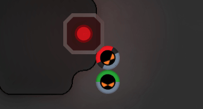
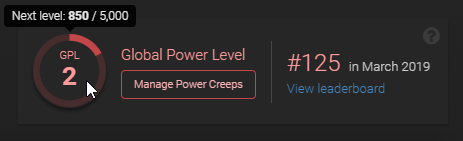

超能是是一种游戏后期的机制，在你的领地发展中开启一段全新的旅程：通过提高效率替代扩大领地规模。它的基本内容如下：
你开采一种叫做“超能”的特殊资源。
这项资源可以在8级以上的房间处理，并增加你的全局超能等级（Global Power Level GPL）
全局超能等级 GPL 允许你创造超能 creep（Power Creeps PC），一种特殊的英雄单位，可以升级和获得技能。
超能宝库（Power Bank）

超能可以从叫作 超能宝库（Power Bank）的建筑物中收集，它时常出现在划分活动区域的中立空房间里。每个超能宝库包含随机数量的超能，摧毁该建筑可以获取它。由于这些建筑具有高能量的属性，它将会反弹所受伤害的 50% 给攻击它的 creep，因此需要在队伍中编入一些治疗者。
你也可以从市场中买到超能，无论是其他玩家还是 NPC 商人。
Global Power Level

8 级的房间将会解锁叫 超能母巢（Power Spawn）的建筑。它允许执行StructurePowerSpawn.processPower方法。将 50 单位的能量与 1 单位的超能进行融合，你可以增加你的全局超能等级 GPL。通过提升等级，你将会解锁开发超能creep（PC）的能力。
你可以在游戏中的预览页面查看你的全局超能等级 GPL。或者使用APIGame.gpl的属性。
超能 Creeps
超能 creep Power Creeps (PC)和游戏中的常规creep不同，类似于策略游戏中的英雄单位。
超能 creep 是不朽的。一个新建造的超能 creep 将会你的账号绑定，甚至在还没被招募到游戏世界的时候就存在账号里了。在它死后（老死或者手动强制死亡），它只是会返回你的账号中，等待 8 小时的冷却后，你仍然可以在任何一个超能母巢中再次招募它。
超能 creep 有以下三种类型：
| 操作员 Operator 一种在后方基地工作的 creep，虽然它可以在进攻时作为破坏者使用。 |
|
| 司令官 Commander 这种超能 creep 是团队辅助，单独使用时发挥不出来。它可以给己方常规 creep 施加增益效果，给敌方常规 creep 施加减益效果。 |
|
| 执行官 Executor 这类 creep 喜好独来独往。鉴于它的技能特点，它可以在和平时期加速经济发展，或在战争时期变身战争机器。 |
超能 creep 拥有 0 到 25 个等级和技能（也就是所谓的“超能力”），每当升一次级，你可以添加一项新的技能，或者提升现有技能的等级。
你需要至少一个空余的全局超能等级GPL才能提升现有超能 creep 的等级，同样的你也需要一个空余的全局超能等级 GPL 创建一个新的 0 级超能 creep。
你可以在任何没有控制器的房间使用超能creep的技能，或者在有 power-enabled 控制器的房间使用（详见 PowerCreep.enableRoom）。
虽然超能 creep 有寿并且会老死。但是你可以在任何超能母巢或者超能宝库附近执行PowerCreep.renew，这将会无花费的恢复它的寿命。如果你能及时地找到超能宝库并恢复，它可以进行长距离移动。
CAUTION: 你可以从你的账号中删除超能 creep（为了释放更多空余全局超能等级 GPL 或者新造一个），但是这个操作会降低你的全局超能等级 1 级！这项移除工作需要 24 个小时。
如果你想要查看你的超能 creep 是如何配置的，并从头开始创建它们，请激活一个试验期。它将允许你在 24 小时之内在不影响 GPL 的情况下瞬时创建和删除你的超能 creep。每个玩家被授予 30 个试验期。如果平衡性调整或者引入新技能导致玩家需要重新审视自己的超能 creep 配置时，我们将会不时的补充一些试验期数量。
Powers
Operator

|
GENERATE_OPS | 生成 1/2/4/6/8 点 ops 资源。冷却 50 tick。creep 等级要求: 0/2/7/14/22. |
|---|---|---|

|
OPERATE_SPAWN | 减少 10/30/50/65/80% 的孵化时间。效果持续 1000 tick。冷却 300 tick。范围 3 格以内。消耗 100 点 ops 资源。creep 等级要求: 0/2/7/14/22. |

|
OPERATE_TOWER | 提升 10/20/30/40/50% 的攻击、修理或治疗效果。效果持续 100 tick。冷却 10 tick。范围 3 格以内。消耗 10 点 ops 资源。creep 等级要求: 0/2/7/14/22. |

|
OPERATE_STORAGE | 提升 500K/1M/2M/4M/7M 单位的存储容量。效果持续 1000 tick。冷却 800 tick。范围 3 格以内。消耗 100 点 ops 资源。creep 等级要求: 0/2/7/14/22. |

|
OPERATE_LAB | 增加 2/4/6/8/10 单位的反应效率。效果持续 1000 tick。冷却 50 tick。范围 3 格以内。消耗 10 点 ops 资源。creep 等级要求: 0/2/7/14/22. |

|
OPERATE_EXTENSION | 使用目标建筑（container、storage 或者 terminal）中的能量，立刻填充房间中 20/40/60/80/100% 的 extension。冷却 50 tick。范围 3 格以内。消耗 2 点 ops 资源。creep 等级要求: 0/2/7/14/22. |

|
OPERATE_OBSERVER | 给予无限视野范围。效果持续 200/400/600/800/1000 tick。冷却 400 tick。范围 3 格以内。消耗 10 点 ops 资源。creep 等级要求: 0/2/7/14/22. |

|
OPERATE_TERMINAL | 将资源转移的能量消耗和冷却时间降低 10/20/30/40/50%。效果持续 1000 tick。冷却 500 tick。范围 3 格以内。消耗 100 点 ops 资源。creep 等级要求: 0/2/7/14/22. |

|
DISRUPT_SPAWN | 暂停孵化进程。效果持续 1/2/3/4/5 tick。冷却 5 tick。范围 20 格以内。消耗 10 点 ops 资源。creep 等级要求: 0/2/7/14/22. |

|
DISRUPT_TOWER | 削弱 10/20/30/40/50% 的效果。效果持续 5 tick。无冷却。范围 50 格以内。消耗 10 点 ops 资源。creep 等级要求: 0/2/7/14/22. |

|
DISRUPT_SOURCE | 暂停 Source 的能量再生。效果持续 100/200/300/400/500 tick。冷却 100 tick。范围 3 格以内。消耗 100 点 ops 资源。creep 等级要求: 0/2/7/14/22. |

|
SHIELD | 在其所在地块上创建一个拥有 5K/10K/15K/20K/25K 点生命值、无法修复的临时 rampart。如果该地块已有 rampart 则无法使用。消耗 100 点能量。效果持续 50 tick。冷却 20 tick。creep 等级要求: 0/2/7/14/22. |

|
REGEN_SOURCE | 使 Source 每 15 tick 重新生成 50/100/150/200/250 点能量。效果持续 300 tick。冷却 100 tick。范围 3 格以内。creep 等级要求: 10/11/12/14/22. |

|
REGEN_MINERAL | 使矿藏每 10 tick 增加 2/4/6/8/10 点矿物。效果持续 100 tick。冷却 100 tick。范围 3 格以内。creep 等级要求: 10/11/12/14/22. |

|
DISRUPT_TERMINAL | 阻止从 terminal 中取出（withdraw）或使用资源。效果持续 10 tick。冷却 8 tick。范围 50 格以内。消耗 50/40/30/20/10 点 ops 资源。creep 等级要求: 20/21/22/23/24. |

|
OPERATE_POWER | 将 Power Spawn 的 power 处理速度提升 1/2/3/4/5 单位每秒。效果持续 1000 tick。冷却 800 tick。范围 3 格以内。消耗 200 点 ops 资源。creep 等级要求: 10/11/12/14/22. |

|
FORTIFY | 使得一个 wall 或者 rampart 免疫所有来自 creep 的伤害和 power 的效果。效果持续 1/2/3/4/5 tick。冷却 5 tick。范围 3 格以内。消耗 5 点 ops 资源。creep 等级要求: 0/2/7/14/22. |

|
OPERATE_CONTROLLER | 将一个 8 级 Controller 的每 tick 升级能量上限提高 10/20/30/40/50 单位。效果持续 1000 tick。冷却 800 tick。范围 3 格以内。消耗 200 点 ops 资源。creep 等级要求: 20/21/22/23/24. |

|
OPERATE_FACTORY | 将 factory 的等级设置为该 power 的等级。该操作无法撤销，并且一旦设置无法修改为其他等级。持续时间结束后再次使用相同的 power 即可恢复效果。效果持续 1000 tick。冷却 800 tick。范围 3 格以内。消耗 100 点 ops 资源。creep 等级要求: 0/2/7/14/22. |
Commander
尚在开发。
Executor
尚在开发。